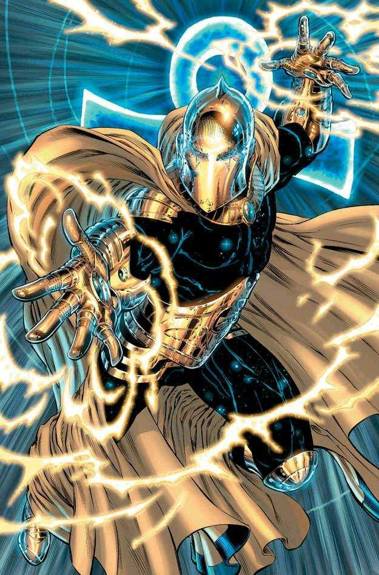

Detective Marciano
Nombre: J'onn J'onzz
Detective Marciano es el más racional en la Liga de la Justicia. Habla siempre con cortesía a sus compañeros, tanto jóvenes como viejos y no se ha mostrado ningún signo de ira o una manifestación de su ego, a pesar de que puede ser severo a veces. Él cuida y protege a su sobrina, la Señorita Marciana, que en un principio no llegó a la Sala de la Justicia para unirse a los otros heroes jóvenes. Con el tiempo cambió de opinión. Más tarde la visitó en la cueva para ver cómo estaba, en múltiples ocasiones.
Mujer Halcón
Nombre: Shayera Thal
Ella es una Thanagariana está casada con Hombre Halcón. Hombre Halcón y Mujer Halcón empezaron a operar como héroes en 2004, y fueron admitidos en la Liga de la Justicia en el mismo año.
Flecha Verde
Nombre: Oliver Queen
Es un Superheroe habitante de Ciudad Estrella y Miembro de la Liga de la Justicia, así como el Antiguo Mentor de Flecha Roja
Flecha Verde es uno de los miembros más alegres de la Liga de la Justicia, y que no siempre se toma tan en serio como muchos de los otros miembros.
Como mentor, Flecha Verde no se comporta de la misma forma en que Batman y Aquaman hacen con sus compinches. Aunque hay un sentido de formalidad entre ellos, Flecha Verde ha demostrado que el tratamiento de su relación con su compañero se basa más en bromear. Parece que han visto su relación con Veloz, en particular, era un amigo en vez de mentor y compañero

Canario Negro
Nombre: Dinah Laurel
Es una Superheroina y Miembro de la Liga de la Justicia y es la encargada de Entrenar al Equipo, en Especial a Superboy.
La actual Canario Negro es la hija de la Canario Negro original, quien nació en 1943. Ella dió a luz a la actual Canario Negro en 1986, cuando ella era relativamente vieja. Ella empezó a desarrollar su Grito Canario en el primer grado en su escuela, y después de casi dejar a toda su clase ensordecida, ella trato de estar en silencio. Ella entrenó con varios amigos de su Madre y compañeros de superhéroes. Actualmente vive en Ciudad Estrella.

Nombre: Kara Zor-el
La adolescente Kara Zor-el fue lanzada a la Tierra desde el agonizante planeta Krypton. Enfrentada a un mundo completamente irreconocible desde el que creció, ella es la mejor chica nueva en la escuela, con un gancho de derecha que rompe el planeta. Una niña solitaria con un poder asombroso, lucha por encontrar su identidad en su nuevo hogar reacio.
Como la adolescente más poderosa del planeta, la Chica de Acero posee todos los poderes de Superman, desde fuerza sobrehumana, velocidad e invulnerabilidad hasta su vuelo y sentidos mejorados. Aún aprendiendo a controlar sus asombrosos poderes y sin el autocontrol de su prima, puede que incluso sea más peligrosa que el Hombre de Acero. Desconectada de un mundo que todavía está luchando por comprender, encontrará acción y violencia sin parar desde su primer minuto en este planeta.
Capitán Átomo
Nombre: Nathaniel C. Adams
Nate Adams era un hombre de constitución fuerte raza blanca con pelo rubio y ojos azules. Después de su transformación, su cuerpo estaba cubierto con una piel de plata, con excepción de los guantes y las botas, que son de color rojo. Él tiene un símbolo estilizado átomo rojo en el pecho. Puede, sin embargo, volver a su forma humana cuando lo desea.
Shazam
Nombre: Billy Batson
Su verdadera apariencia es de un niño de 10 años de edad. Aunque el Capitán Maravilla en físico parece ser un adulto grande e imponente, no se puede negar que uno sigue siendo un niño de 10 años de edad, de mentalidad. Enérgico, feliz y afortunado, y excitable fácilmente, el Capitán Maravilla es sin duda el miembro menos rígido de la Liga de la Justicia
Aunque el Capitán Maravilla en físico parece ser un adulto grande e imponente, no se puede negar que uno sigue siendo un niño de 10 años de edad, de mentalidad. Enérgico, feliz y afortunado, y excitable fácilmente, el Capitán Maravilla es sin duda el miembro menos rígido de la Liga de la Justicia
La naturaleza juvenil del Capitán Maravilla, lamentablemente lo hace ingenuo, fácil de confundir y manipular, lo que ha hecho el equipo al menos una vez.
Linterna Verde
Nombre: John Stewart
Oriundo de Detroit, Michigan, John Stewart, un Marine veterano fue seleccionado por los Guardianes del Universo como respaldo de Hal Jordan. Sumado a esto, los Guardianes que no contaban con Guy Gardner, quien resultó herido tras un desastre.
Hal Jordan se encargó de entrenar a Stewart, quien desde un principio rechazó usar un antifaz ya que no tenía nada que ocultar.
Stewart y Jordan chocaron constantemente por la personalidad del exmilitar, algo que reforzó la idea de los Guardianes de que fuera el Green Lantern de respaldo en caso de que Hal Jordan ya no pudiera cumplir su deber.
Tornado Rojo
Nombre: Ninguno
Es un androide capaz de generar y manipular fuertes vientos. Fue el primer "mentor" del equipo.
Fue creado con el fin de destruir a la Liga de la Justicia, pero a diferencia de sus hermanos (Torpedo Rojo, Infierno Rojo) el sabría que era un robot. Pero no sabía para que fue construido ni por quien. Finge ser secuestrado por sus hermanos para descubrir mas de su creador, y juntos derrotan a Volcán Rojo, aunque por un precio muy alto, ya que sus hermanos se sacrifican.
Atomo
Nombre: Ray Palmer
Usando una masa de materia de una estrella de enana blanca, creó una lente que le permitió encogerse al tamaño subatómico. Originalmente, su tamaño y sus habilidades de densidad molecular derivaron del material de estrella de una enana blanca de su traje, controlado por mecanismos en su cinturón, y después por mandos en las palmas de sus guantes. Mucho después, él ganó los poderes equivalentes innatos de encogerse dentro de su propio cuerpo
Doctor Destino
Nombre: Nabú
Es un Señor de la Orden, Nabú suele estar en un huésped humano, él toma el control y manda su alma al Casco del Destino hasta que lo libere, el huésped más largo fue Kent Nelson este se unió a la Sociedad de Justicia de América después de 65 años Inza (La esposa de Kent) le pidió que se separara y el alma de Nabú volvió al casco. En Negación Nabú consigue otro huésped que fue Wally para enfrentarse contra Klarion, después con ayuda de Kent, Wally se libera. Luego vuelve siendo el huésped Aqualad para derrotar a Wotan pero Kent logra convencer a Nabú de conseguir otro huésped. En desesperación y peligro, Zatanna decide ser la portadora del casco a pesar del riesgo de no ser liberada. Su padre, Zatara, dió su palabra a Nabú para que liberara a su hija y lo posea a él por sus capacidades avanzadas, siendo ahora el actual poseedor del Casco de Destino.
Hombre Plástico
Nombre: Patrick "Eel" O'Brian

Hombre Plástico era un bandido llamado Patrick "Eel" O'Brian, antes de que cayera en un caldero de ácido que le dio sus súper-habilidades. Usa lentes oscuros y un uniforme amarillo y rojo, tan flexible como su cuerpo. Cualquier forma que tome, sus colores permanecen igual.
Hombre Plástico fue miembro de la Liga de la Justicia pero decidió dejar el equipo tiempo atrás, alegando que le gustaría pasar más tiempo con su hijo, Luke McDunagh (mejor conocido como Offspring). Su situación actual junto al equipo nunca fue muy bien definida, permaneciendo un misterio si se le considera como miembro activo o no.
Zatanna
Nombre: Zatanna Zatara
Es una Heroina, una Maga, un anterior Miembro de El Equipo y actualmente un Miembro de la [[Liga de la Justicia]]. Ella es la hija de Zatara, el huesped del Dr. Destino.
Inteligente, confiada, segura de sí misma y capaz de manipular la realidad misma con sus vastas habilidades mágicas, Zatanna equilibra su tiempo como ilusionista escénica con la lucha contra las artes oscuras junto a algunos de los superhéroes más grandes del mundo. Al recitar hechizos al revés, puede invocar cualquier cosa que desee su imaginación, y su inventiva a menudo le permite encontrar soluciones creativas incluso para los problemas más difíciles.
Zatanna no es ajena a los peligros de la magia, ya que perdió a su padre por las artes oscuras. Aunque esto la dejó sin un mentor y relativamente inexperta en el mundo de la magia, solo fomentó su determinación de enfrentarse a cualquiera que busque usar la magia a costa de otros. Pero si Zatanna espera escapar del destino de su padre, tendrá que dominar rápidamente su oficio antes de enfrentarse a los místicos más poderosos del mundo.